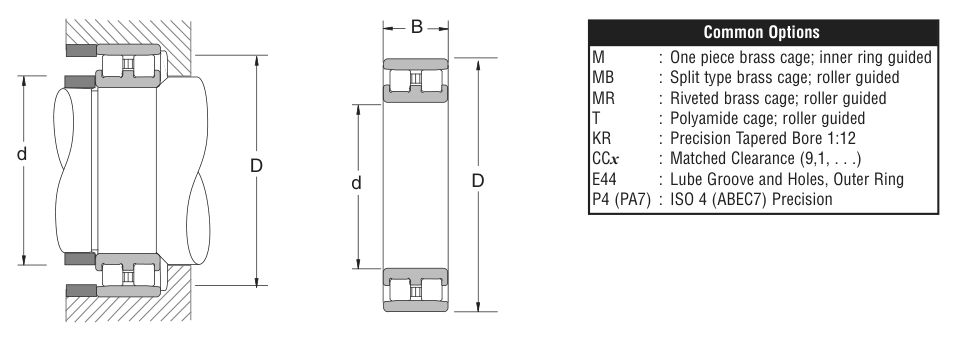

Original catalogue drawing - NSK catalogue, page 223

Scanned from the manufacturer catalogue page listing this part number. All part numbers printed on that table share the same drawing.
Scale cross-section
Blue = inner / outer ring, yellow = rolling element. Drawn to scale from this part's own
dimensions for selection reference only - not a manufacturing or assembly drawing.
Dimension table (mm / inch)
Symbol
Dimension
mm
inch
d
Bore diameter
170
6.6929
D
Outside diameter
230
9.0551
B
Inner-ring / bearing width
45
1.7717
Notes
Weights are given in kg. Load ratings are shown in both the original catalogue units and the converted value (1 N = 0.2248 lbf). Data is provided for selection reference only - confirm against the latest official catalogue before ordering.
Main dimensions
Bore d (mm)
170
Bore d (in)
6.6929
Outside dia. D (mm)
230
Outside dia. D (in)
9.0551
Width B (mm)
45
Width B (in)
1.7717
Load ratings & speeds
Basic dynamic load rating Cr (lbs)
63000
Basic static load rating Cor (lbs)
123000
Limiting speed - grease (rpm)
3,600
Limiting speed - oil (rpm)
4,000
Weight
Weight (kg)
5.457
Mounting dimensions (fillets / shoulders)
Fillet ra (in)
0.0787
Shaft shoulder da min (in)
8.7008
Shaft shoulder da (in)
7.0472
Housing shoulder Db (in)
8.5433
Bearing life (ISO 281 basic rating life)
C / P
Equivalent load P (N)
L10 (106 rev)
L10h at 1,200 rpm
4
70,059
64
889
6
46,706
216
3,000
8
35,030
512
7,111
10
28,024
1,000
13,889
15
18,683
3,375
46,875
Basic rating life per ISO 281: L10 = (C/P)3 with C = 280,238 N. Hours = L10 x 106 / (60n). Life-modification factors for lubrication, contamination and temperature (aISO) are not included.
Source & traceability
Brand
NSK
Source catalogue
NSK inch product catalogue
Catalogue page
p.225 (dimensions) / p.226 (ratings)
Dimensions in inches and millimetres, load ratings in lbs.
Send us the quantity you need and we will come back with price and
lead time, normally within 24 hours. Equivalent parts from other brands can be quoted at the same time.